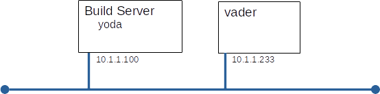

GPG (GNU Privacy Guard)
Introduction
Today we will use the open (GNU) implementation of the PGP public key cryptography system.
Grading:
You will demonstrate your understanding of this lab by completing the questions found on Canvas and submitting a pdf or html document to the drop-box for this lab. Be careful, there are two sets of questions on Canvas, only one is genuine (the other is a forgery).
Overview:
You will build this configuration.

Part A: Build vader
Here's an other chance to show how much easier our lives are because we have a build server.
Build vader to these specifications:
- Standard OS configuration as defined in Lab01
- IP addressed shown in diagram above
- hostname set
- one regular user with userid=<YOUR_NAME>
- passwords for everyone
Part B: Creating and managing keys
Before we can: sign, verify signatures, encrypt, or decrypt, you need to have keys. Public and private for yourself and a copies of other peoples private key.
Create a key pair for yourself:
- Make sure you are logged on as YOU and not root
whoami
- Generate a key-pair for yourself
gpg --gen-key
Select:
Name: <your name>
E-mail: <your email address>
Note:This command might take a while to run, while running it looks at system activity to find 'randomness', a good way to generate system activity is to use find to run md5sum on every file.
- Check that your key-pair was generated and registered with GPG
gpg --list-keys
Import your manager's public key
- Fetch the public key of Bullwinkle J Moose, IT Director, Acme Corp
- Import Bullwinkle's public key
gpg --import < bullwinkle.pub.txt
Export and publish your public key
- Export your key
gpg --export --armor <your_name> > your_name.pub.txt
- Use ftp to publish your public key to the ftp server supplied by your instructor
Import your neighbour's public key:
- Use ftp to fetch and install your neighbour's public key from the ftp server
If you are doing this lab by yourself, play the role of your neighbour by logging on as another user and performing the necessary tasks.
Part C: Using Keys
The keys you have created can be used for signing and encryption. In this section of the lab you will exchange two types of messages with your neighbour: signed and encrypted.
Create and publish your manifesto
- Create a public document that you want the world to see and you want the world to know came from your. Call it first.last.manifesto.txt (It should contain one or two statements about which your feel strongly)
- Sign your manifesto with your public key, and place the signature in a file called first.last.manifesto.signed
hint: gpg --output <outfile> --clearsign <file_to_sign>
- Publish your signed manifesto to the ftp server
- Fetch your neighbour's signed manifesto from the ftp server
- Verify the signature
hint: man gpg
- "Modify" your neighbour's manifesto, making a very small change (add a period or change a lower case letter to upper) Is the document still valid?
Comment on your neighbour's manifestor
- Create a comment on your neighbour's manifesto in a file called comment.txt
- This comment is private and only to be read by your neighour - encrypt it with her public key, storing the result in a file called comment.for.first.last hint: gpg --armor --output <out_file> -r <email_address> --encrypt
- Publish your comment to the ftp server
- Fetch any comments for you from the ftp server and decrypt them
- Fetch comments intended for someone else, see if you can read them
Part D: Demonstrating your proficiency (grading)
To demonstrate your proficiency with GPG, you will: download questions from Canvas; verify their authenticity; answer the authentic questions; encrypt and sign your answers; and finally upload your answers to Canvas.
- Download Questions_A and Questions B from Canvas. (only one is authentic)
- Use gpg to determine which file is authentic.
- Answer the authentic questions, placing your answers in a text file named Answers.txt
- Sign and encrypt Answers.txt, so that only Bullwinkle can read it AND he knows it was produced by you.
- Upload your encrypted answers to the drop-box as Answers.crypt
- Upload your public key to the drop-box as PubKey.txt
Part E: Trusting Keys
By default keys are flagged as not trusted so you see warning messages like "WARNING: This key is not certified with a trusted signature!".We can tell GPG that we trust a signature and make this message go away. We should only tell GPG that we trust a signature when we are really sure that we do.
- Bullwinkle drops by your cubicle and tells you in person that the finger print of his public key is:
E543 1E8C F84B A62F 5F01 B9CE B5F6 A3A7 ADC5 4F6D
Compare the finger print Bullwinkle gave you against the for the key you have. If you have a good key, tell GPG so.
Verify a message from Bullwinkle again, has anything changed?